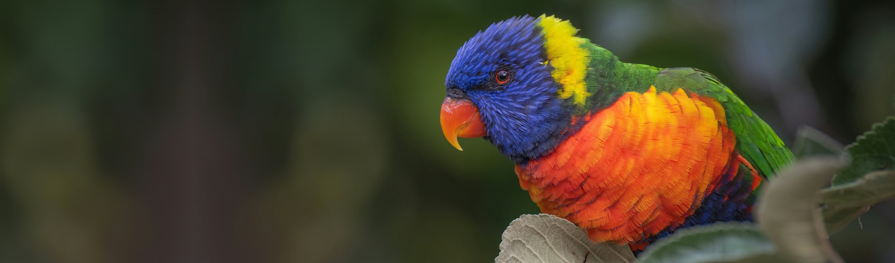

Make a difference for wildlife and conservation.
There are many ways to fundraise on our behalf, in your community or in your workplace. The sky is the limit, and we would love to hear your idea.
Thank you.
There are many ways you can choose to fundraise on our behalf in your community or in your workplace. We have set out some examples below, but the sky is the limit and we would love you to tell us your own fundraiser ideas.
Please download and fill out our Proposal to Fundraise document and let us know what you would like to do. Need some ideas first? Keep reading below, or download our Community Fundraising Kit, which has plenty of tips to get you started.
You can fundraise for us.
There are many varied opportunities for people to fundraise for us, personally, creatively, and some with a challenge.
Community event
A garage or bake sale, a sausage sizzle.
Workplace event
A coffee donation or a morning tea.
Raffle or auction
Gather prizes, sell tickets, raise the room.
Sale of products
Make something, sell it, send the proceeds our way.
Challenge event
A fun run, a cycle, a hike.
School fundraiser
A whole-school effort or a fundraising stall.
For more tips and tricks, download the Community Fundraising Kit.
Start your own, or join one that exists.
Create your own event
Whether you are collecting in lieu of wedding presents, setting yourself a personal challenge, or simply asking for a donation, you can make a big difference for our wilderness and wildlife.
You can even set up your own fundraising page and raise money securely online through GoFundraise, or directly with us. Get in touch and we will help you set it up.
Join an existing event
There are marathons, swim events, cycling and many other challenges you can take part in. The results are rewarding and the possibilities are endless. Take it on by yourself, or put together a team with colleagues, friends or family so everyone can be part of it.
We can also set up a fundraising page for your company or team event, collecting donations securely online and issuing receipts to your donors automatically. Get in touch for more information.
For loving Australia the way you do.
Thank you for loving Australia’s unique environment and taking that extra step to help its ongoing conservation and protection. Together we can protect habitat and the animals that live there, ensuring a lasting legacy for future generations to be inspired by.
Don’t forget to fill out and submit your Proposal to Fundraise. We look forward to hearing what you have planned.
Fundraising enquiries and proposals.
For all fundraising enquiries, or to submit your Proposal to Fundraise, fill out the form and our fundraising team will be with you shortly.
You can also email fnpw@fnpw.org.au or call 1800 898 626.
The form is taking a while to load. Email fnpw@fnpw.org.au or call 1800 898 626 and we will take your enquiry directly.
By submitting you consent to us contacting you about your enquiry.
Ready to make a difference?
Your donation grows national parks, saves species and heals the land.